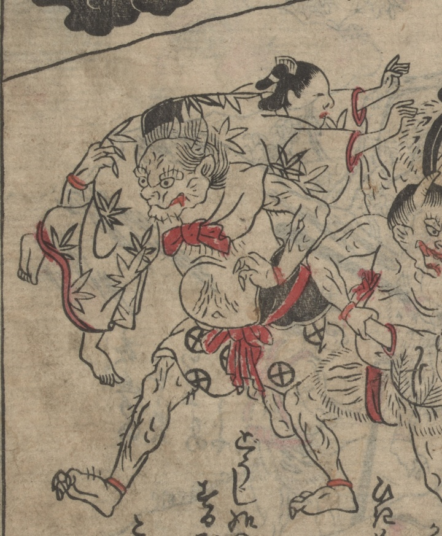

鬼；オニ

牙を持ち、頭に2本の角が生えた鬼。上半身は裸で、首に布を結び、腰布をつけている。町の女性を肩に担ぎ、連れ去ろうとしている。
著作者：不明／出典：親書誌：U426_nichibunken_0473：[絵本千丈嶽]；エホンセンジョウガタケ／日付：2025／資源識別子：U426_nichibunken_0473_0002_0002
Copyright (c)2010- International Research Center for Japanese Studies, Kyoto, Japan. All rights reserved.